A UX-driven optimisation of the core gameplay screen focused on improving visual hierarchy, interaction clarity, and player feedback loops.
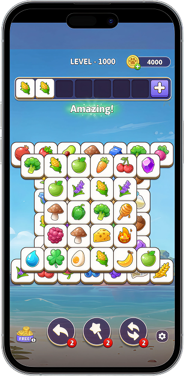
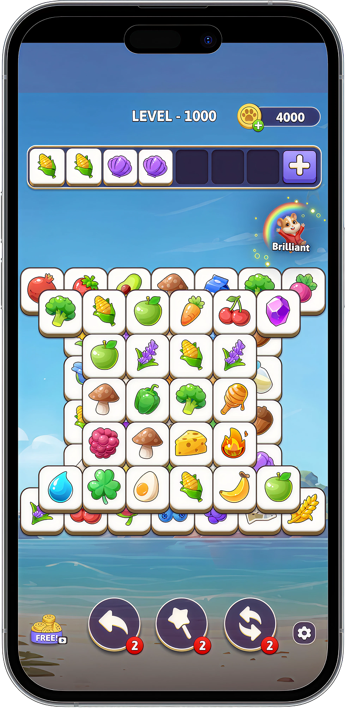
SETTING THE SCENE
PROBLEM SPACE
In order to know the existing friction points on the screen & area of opportunities which can help to enhance the gameplay experience, the puzzle needed a systematic UX audit.
Tiles were small, causing mistaps — especially for older players. The rack was undersized, making the “snap into place” feel weak. Multiple daily support tickets requesting bigger tiles.
Power-ups blended with the tiles (both square). The rack lacked distinction from the board. Jewel notifs were oversized, dominating the icon space.
No gratification on making matches. No rack fill feedback. Silent interactions made the game feel unresponsive. Players had no sense on momentum or delight during active gameplay.
Extra slot looked nothing like other powerups despite functioning as one. The w2e icon was visually inconsistent with the home screen version. Too many similar tones of same colour family.
THE CHANGE & UX REASONING
Validated through competitive analysis of top-performing tile-match games to benchmark UI patterns and inform design decisions.
Making the core gameplay elements bigger, consistent, and more intuitive.
Shifted from square to slightly rectangular tiles to increase tile size within the existing board constraints, without altering the grid structure. Changing tile base colour for better visibility.
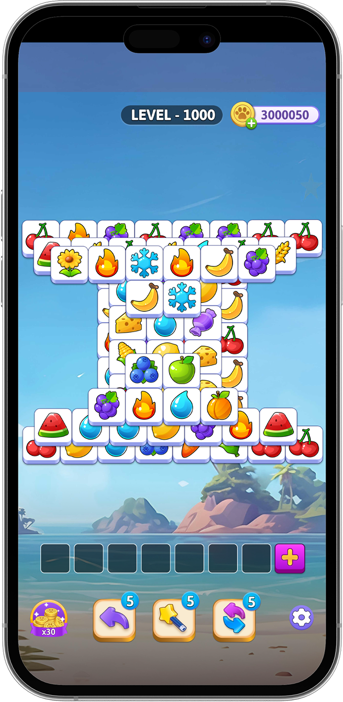
Refined the rack by increasing its size, repositioning it above the board, and introducing a holder with a subtle background tint. Together, these changes improve visibility, reinforce spatial hierarchy, and mimics the tactile behaviour of physical tile games.
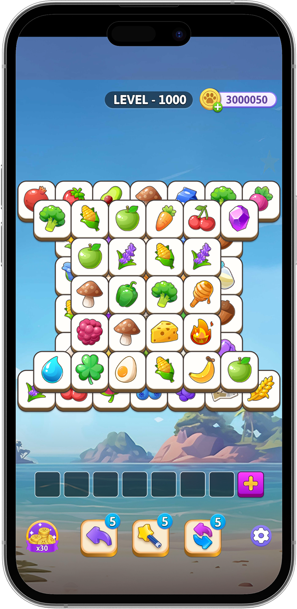
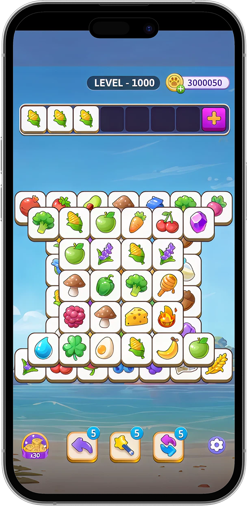
Redesigned power-ups with circular holders, neutral tones, and increased size, while repositioning them closer to the board for stronger spatial anchoring. These changes establish power-ups as distinct, accessible tools within the gameplay environment.
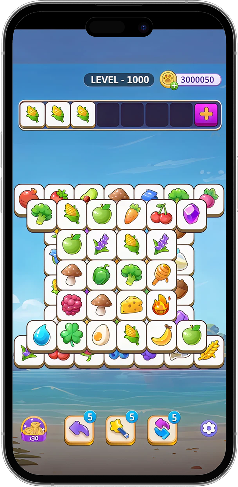
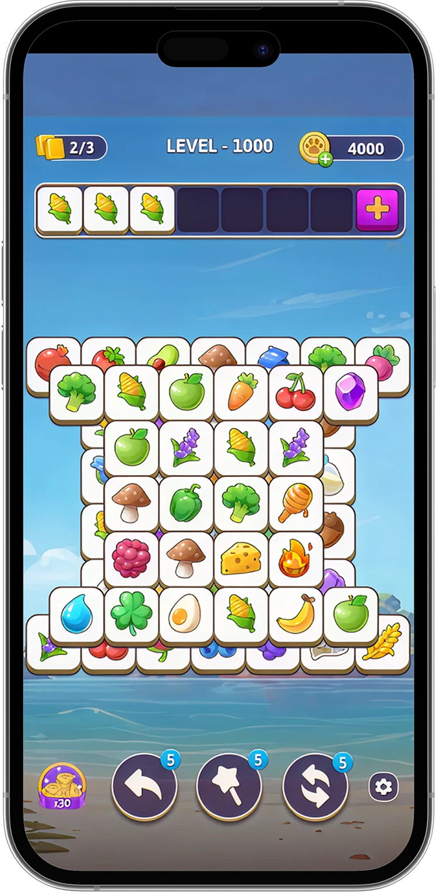
Standardised extra slot and watch-to-earn elements by aligning their visual language, iconography, and labelling with the broader UI system. The extra slot was integrated into the power-up system, while the reward CTA was simplified with a clearer “Free” cue and aligned with rest of the UI.
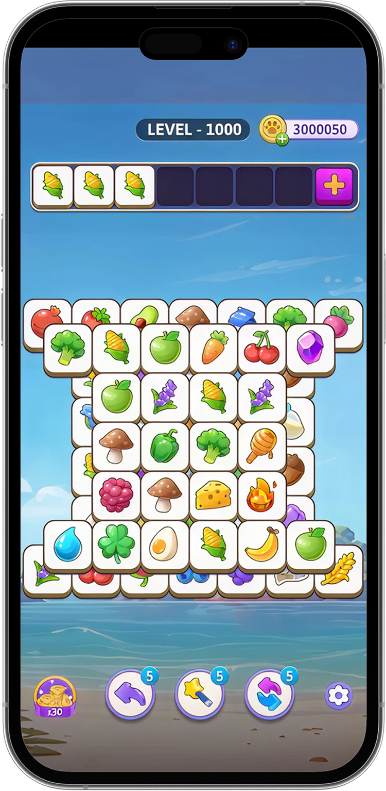
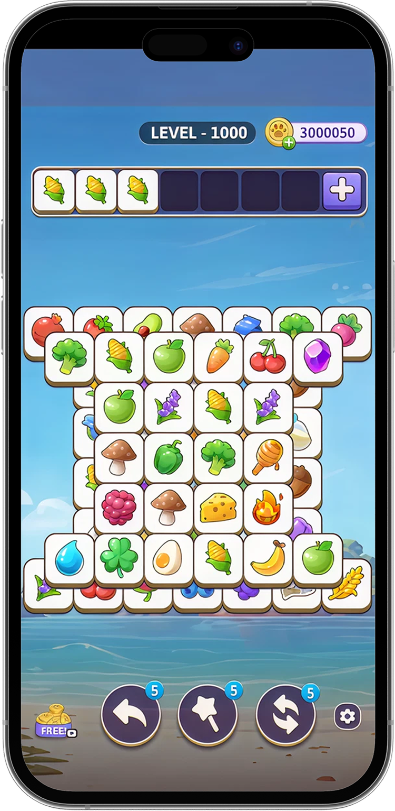
Compared to competitor games, the jewel notification badges on our power-ups were noticeably larger and dominated the icon space. The badge is a secondary signal; it should inform, not overpower.
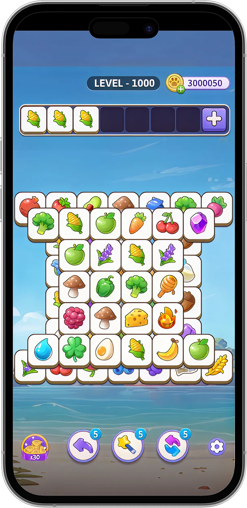
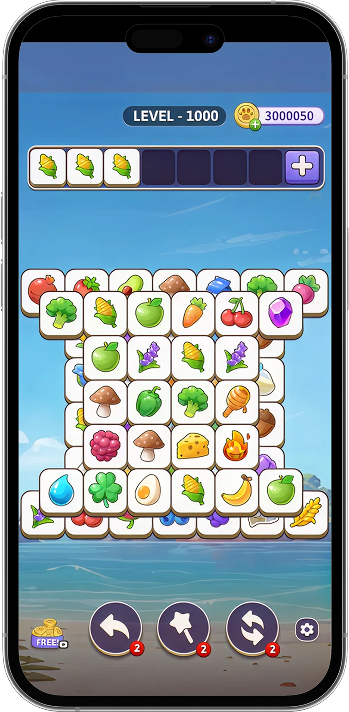
Turning a silent game board into a responsive, rewarding experience.
Adding moments of micro-delight and responsiveness to transform silent interactions into rewarding gameplay loops.
Text celebration on consecutive tile matches — “On a Roll!”, “Awesome!”, “Amazing!”
Visual confirmation when placing a correct tile on the board
Cue when rack tiles are successfully placed on the board
Visual feedback when the rack is cleared — signalling progression
THE FINAL DESIGN
No change was made in isolation. Every refinement complements the other — bigger tiles need a repositioned rack, circular power-ups need neutral tones, feedback needs space on the board.
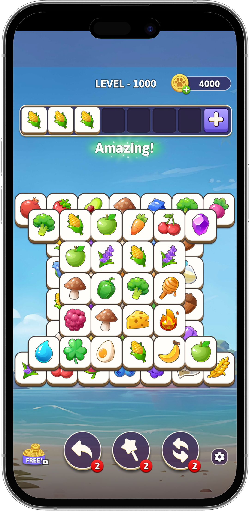
A/B TESTING & IMPACT
Changes were shipped in parts, so the data analyst could clearly attribute metric movements to specific changes.
Each change was tested with a control vs. variant split across a statistically significant user base before full rollout.
Insights from performance data and player feedback were continuously analysed to validate decisions and guide further refinements.
REFLECTION
No single change drives impact in isolation. Consistent improvements across usability, clarity, and feedback can collectively lead to meaningful gains in engagement. Well-designed systems outperform isolated optimizations.
Shipping changes individually allowed us to measure the impact of each change in isolation. Measuring one variable at a time ensures reliable insights and reduces ambiguity in decision-making.
Design limitations often lead to more thoughtful and efficient solutions. Working within constraints encourages prioritization and leads to outcomes that are both practical and scalable.
Intuitive design decisions don’t always translate to better outcomes. Continuous testing and validation are critical to ensure that solutions align with actual user behaviour.